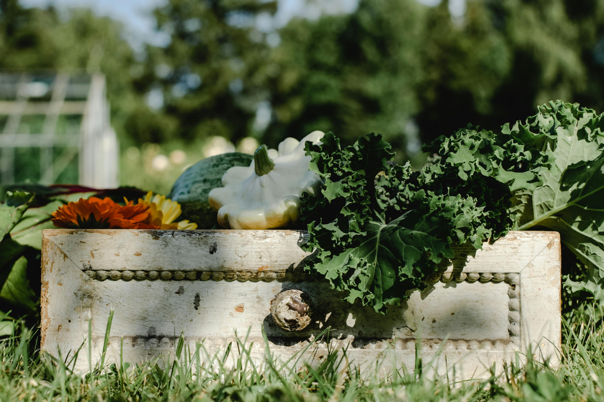

ABONOS
Naturales y Empresariales

ANIMALES
100% Garantizados
PRECIO DEL MERCADO DIARIO
Siempre pensamos en nuestros clientes
Naturales y Empresariales
100% Garantizados
Siempre pensamos en nuestros clientes
| #ID | Nombre | Tipo | Cantidad |
|---|---|---|---|
| 1 | Pollos | Granja | 1k |
| 2 | Res | Potrero | 100 |
| 3 | Cerdos | Marranera | 85 |
(FQ) Fertilizantes Químicos
(FO) Fertilizantes Orgánicos: